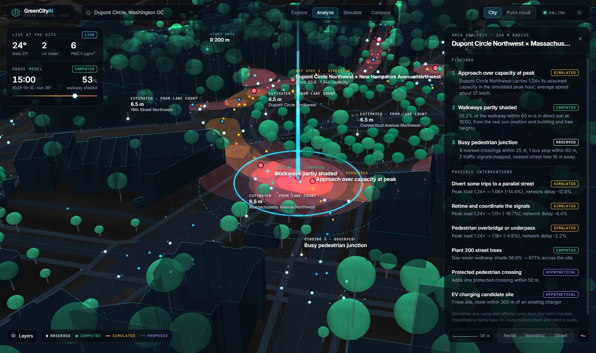
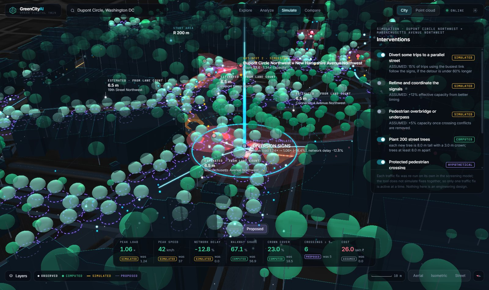
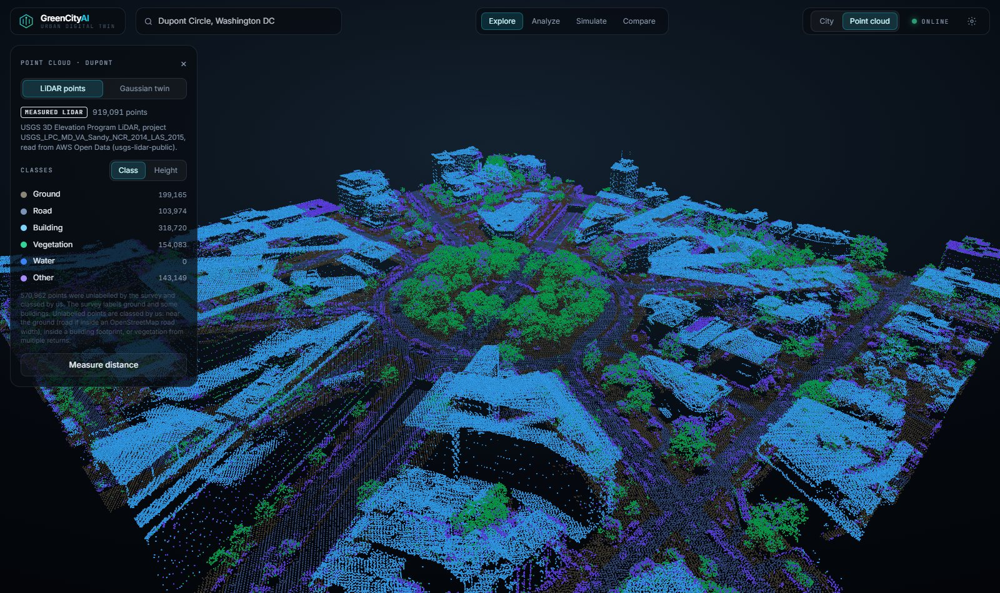
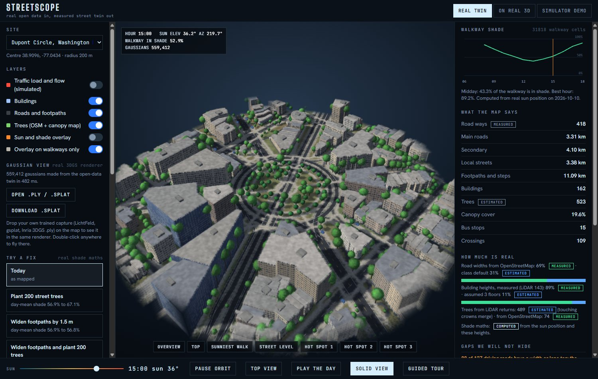

Cities plan streets they have never measured
- Where is the shade on this footpath at 3 in the afternoon?
- Which junctions choke every evening, and why?
- If we plant 200 trees here, does the walk actually get cooler?
These questions usually get answered with site visits, old surveys and a lot of guessing. A drone flight already holds most of the answer. It just arrives as millions of unlabelled coloured points, so the work is turning that into ground, roofs and trees you can reason about.
Watch it run
2 minutes 50 seconds. The video is made by code: a script drives the real app in headless Chrome and records it frame by frame, so every number on screen is live.
From raw points to a street you can test
Put the scan on the map
The coordinate system comes from the LAS header, so there's no search step. The UTM grid at the test site is turned about 0.9° from true north, so a plain offset isn't enough: an affine fit to exact transforms places every point with 1.4 cm worst-case error.
Find the ground
A progressive morphological filter grows its window step by step and peels off everything that sits above the terrain, leaving a ground model to measure heights against.
Find the vegetation
The test survey came with no classes at all, so we classify it ourselves: survey classes or multiple returns when the file has them, otherwise excess green (2G − R − B) on the photo colour. Dry brown-olive scrub outside mapped buildings counts too. 87.8% of the points are classed by our pipeline.
Measure every building
Roof points that fall inside each OpenStreetMap footprint give the building's height from their 90th percentile, so a few stray points can't skew it. 71 of 73 mapped buildings were measured.
Find the trees
Local maxima of the smoothed canopy height model become tree tops, with cells inside buildings skipped. Each top gets a height and a crown, ready to cast shade.
Trace the sun
For each hour of the chosen day we compute the real sun position and cast shadows from buildings and tree crowns onto every walkway cell. The result is a sun-exposure map of the footpaths.
Test the fixes
A peak-hour traffic model flags overloaded roads. Fixes like a diversion, new street trees or a protected crossing are rerun through the same shade and traffic maths, so before and after are directly comparable.
Draw it fast
A WebGL2 3D gaussian splat renderer we wrote ourselves draws one splat per measured point. The city view batches buildings, roads and trees into a few GPU draws.
The scan sees trees the satellite misses
Same 900 m square of campus, two sources. The satellite canopy map has about 2.8 m of error and merges touching crowns into one, so whole rows of street trees collapse into a few.
Every number says where it came from
No scan? GreenCityAI builds the twin from open data instead: OpenStreetMap buildings and roads, and a satellite canopy map on AWS Open Data. Some of that has to be made up, like assumed floor counts for unmeasured buildings, simulated traffic and generated splats. All of it is flagged. In planning, a confident wrong number is worse than no number.
Inside the app




Built with
- Pipeline
- Python and NumPy, laspy with LAZ support, pyproj
- Inputs
- LAS, LAZ and PLY point clouds from drones or LiDAR
- App
- React, TypeScript, Vite, Tailwind
- 3D
- CesiumJS, Three.js and our own WebGL2 gaussian splat renderer
- Open data
- OpenStreetMap, satellite canopy map on AWS Open Data, USGS airborne LiDAR, Open-Meteo
- Optional view
- Google Photorealistic 3D Tiles, for display only. No number is measured from them.
Where the idea came from
Seeing a whole city from above and actually understanding it came from God's Eye View by Bilawal Sidhu.
Thank you
Abhishek Jha, for a conversation about urban planning that started all of this.
Built by
The pipeline, the app and the video script are all in the repo. Run scripts/run_all.bat and open the app locally.